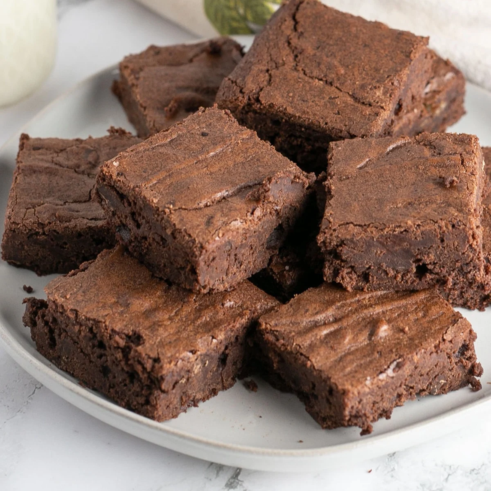
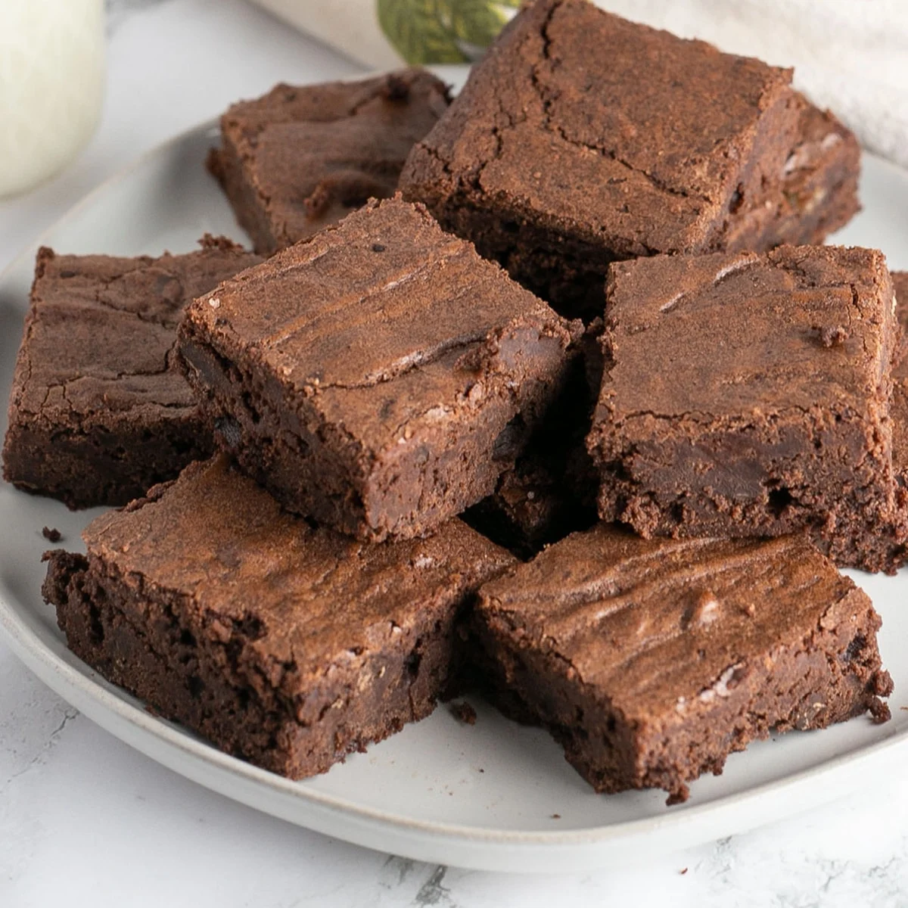

Best Brownies
Looking for the best brownie recipe on the internet?
You've come to the right place!
These rich, fudgy brownies are topped with a decadent homemade frosting.
You'll find a detailed ingredient list and step-by-step instructions in the recipe below.
Ingredients
For the Brownies:
- ½ Cup of Butter
- 1 Cup of White Sugar
- 2 Eggs
- 1 Teaspoon of Vanilla Extract
- ⅓ Cup of Cocoa Powder
- ½ Cup of All Purpose Flour
- ¼ Teaspoon of Salt
- ¼ Teaspoon of Baking Powder
For the Frosting:
- 3 Tablespoons of Butter
- 3 Tablespoons of Cocoa Powder
- 1 Tablespoon of Honey
- 1 Teaspoon of Vanilla Extract
- 1 Cup of Confectioner's Sugar
Steps
- Preheat the oven to 350 degrees F (175 degrees C). Grease and flour an 8-inch square pan.
- Melt 1/2 cup butter in a large saucepan. Remove from heat, and stir in sugar, eggs, and 1 teaspoon vanilla. Beat in 1/3 cup cocoa, flour, salt, and baking powder. Spread batter into prepared pan.
- Bake in the preheated oven until the top is dry and edges have started to pull away from the sides of the pan, about 25 to 30 minutes. Let cool briefly before frosting.
- To make the frosting: Combine softened butter, confectioners' sugar, 3 tablespoons cocoa, honey, and 1 teaspoon vanilla extract in a bowl. Stir until smooth. Frost brownies while they are still warm.
This recipe is courtesy of All Recipes
 
